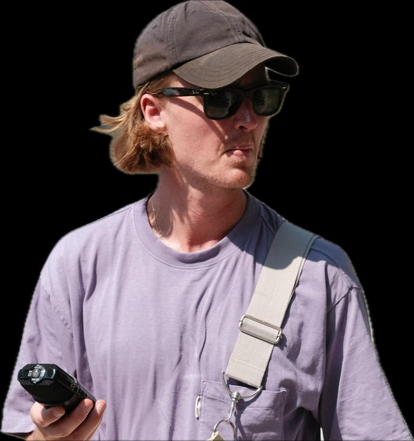

About
01
What is
SSLL DSP?
SSLL DSP explores the intersection of digital signal processing, creative coding, and electronic music.
The guiding principle is to bring musically uncharted ideas from digital signal processing into inspiring and playable Max for Live devices, while documenting the process through experiments, articles, and tutorials.
02
Who is
behind it?

My name is Henrik Forssell and I'm a signal processing researcher and musician based in Stockholm, Sweden.
My interest in creative coding, multimedia programming, and electronic music production using Max/MSP, Ableton Live and modular synthesis grew in parallel with my doctoral studies and academic research at KTH Royal Institute of Technology.
This eventually led me to share selected works through the SSLL DSP project and this site.
03
What happens
here?
On this site you will find my latest Max for Live devices and Max patches, along with links to YouTube videos, tutorials, articles, and other work that I publish.
SSLL DSP is an independent project alongside my professional research, giving me a space to explore signal processing through the lens of curiosity and creative usefulness rather than the conventions of academic research.
04
Get in
touch
For ideas, questions, or collaborations, please don't hesitate to reach out through the channels below.